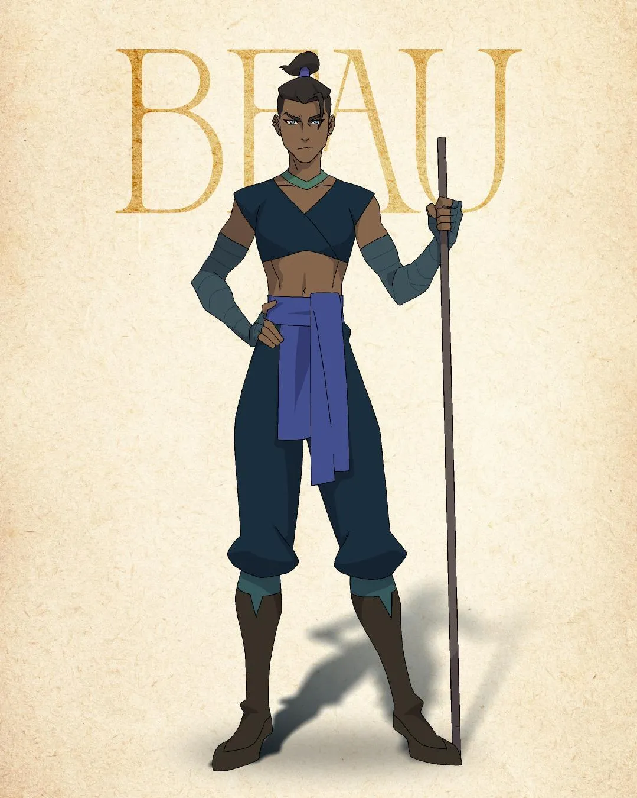
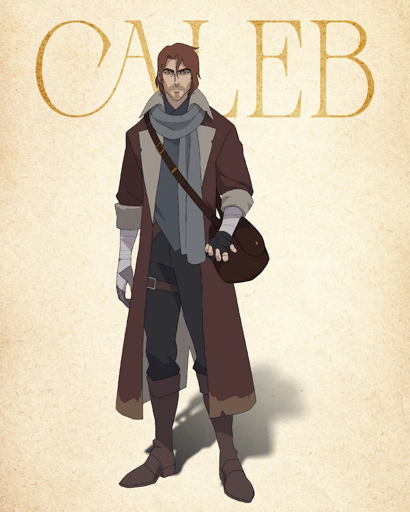

The Mighty Nein are a party of powerful adventurers based in Wildemount, primarily active between 835 and 836 PD, and the protagonists of the Second Campaign of Critical Role. In the public eye, they're mostly known for arranging the peace talks that ended the War of Ash and Light, for exposing the abuse perpetrated by Trent Ikithon of the Cerberus Assembly, as well as representing the Exandrian Accord in the fight against the Weave Mind years later. However they received little public acclaim for their other heroic deeds, including thwarting the Angel of Irons cult, rescuing the people marooned on the island of Rumblecusp from a despotic morkoth, and preventing the corrupted city of Cognouza from returning to the Material Plane.

-Early Life and Family Tensions- Beau was born to Thoreau and Clara Lionett, a wealthy winemaking family from Kamordah. Her father was distant and “standoffish,” while her mother tried to help but had little influence. Beau was expected to manage the family’s bookkeeping, but she resisted this role. She began stealing and reselling her father’s wine at cost, which escalated into other crimes like extortion and trafficking. -Criminal Past and Tori- Beau’s criminal career included working with a woman named Tori, with whom she had a romantic relationship. They were arrested together; Thoreau paid Beau’s bail but not Tori’s, and Beau never learned Tori’s fate. -Father’s Intervention and the Cobalt Soul- When Beau’s father discovered her bootlegging and other misdeeds, he bribed an archivist of the Cobalt Soul — a monastic order — to “kidnap” her and discipline her. Beau was taken in as an initiate, but after six months, she received a letter from her parents claiming they had a son and implying they no longer wanted contact. Assuming they had stopped funding her monastic training, Beau left the Valley Archive to pursue her own path.
-Early Life and Education- Bren was born in Blumenthal, Zemni Fields, to Leofric and Una Ermendrud. A talented young mage, he was chosen for the Soltryce Academy, a prestigious institution for magical study. There, he excelled and caught the attention of the powerful wizard Trent Ikithon, who invited him, along with friends Astrid Becke and Eadwulf Grieve, to join his inner circle.-Volstrucker Service- kithon recruited Bren into the Volstruckers, a magic-enhanced assassin corps serving the Dwendalian Empire. His missions included dangerous assignments, such as an assassination at the Cobalt Soul monastery, which left a moral scar. Over time, Ikithon’s influence and the Empire’s demands eroded Bren’s innocence. -The Turning Point- When Ikithon branded Bren’s family as traitors, he ordered the destruction of Bren’s home. Bren, unable to resist, set the farm ablaze while his parents and their cat were trapped inside, killing them. This act—combined with his role in the Cobalt Soul massacre—left him haunted and morally compromised.
